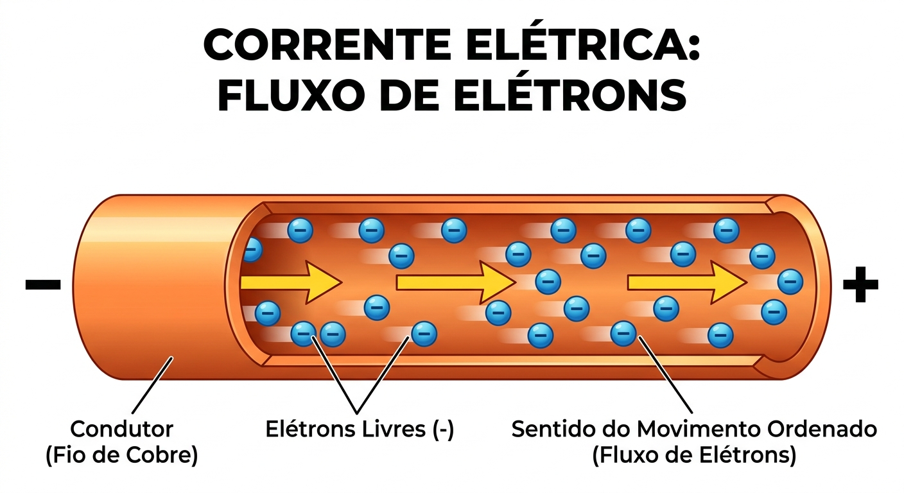
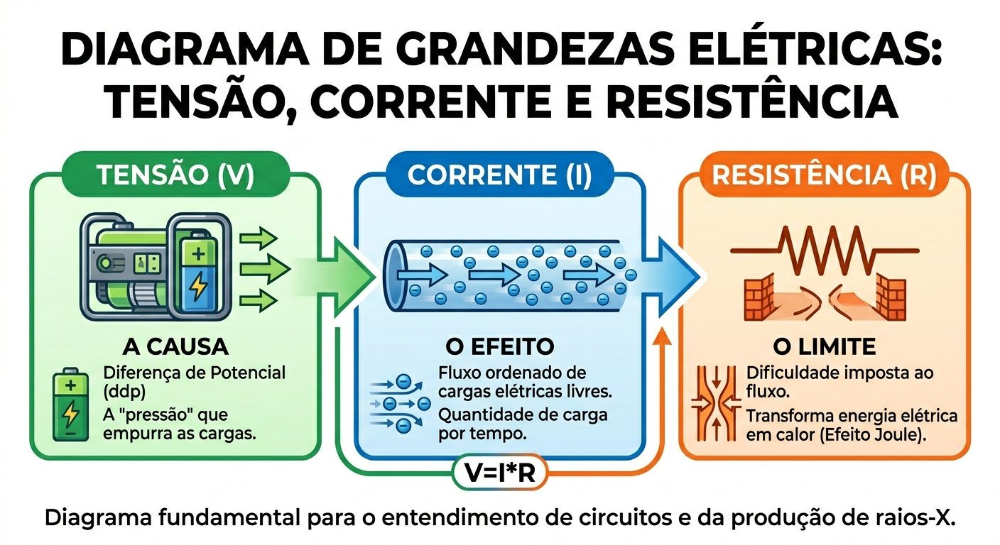
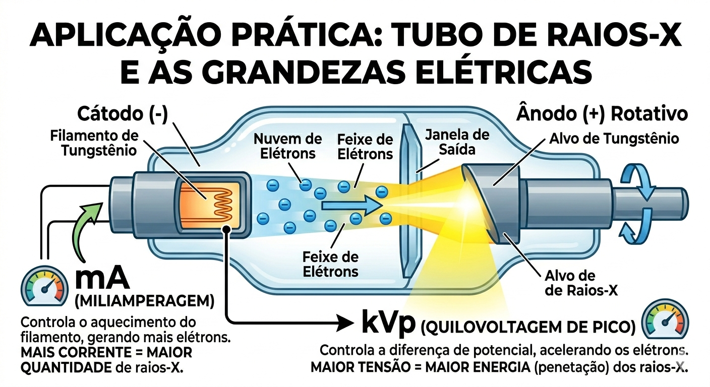

Imagine uma rodovia lotada de carros em movimento contínuo. A corrente elétrica é muito semelhante, mas em vez de carros, temos elétrons livres viajando através de um material condutor (como um fio de cobre).

A intensidade dessa corrente é medida em Ampères (A) e representa a quantidade de carga elétrica (Q) que passa por uma seção do condutor em um intervalo de tempo (t).
Os elétrons não se movem de forma ordenada por conta própria. Eles precisam de um "empurrão". Esse empurrão é a Tensão Elétrica, também conhecida como Diferença de Potencial (ddp).
Se pensarmos na eletricidade como água fluindo em um cano, a tensão seria a pressão da bomba d'água. Sem tensão, não há força para criar a corrente.
Enquanto a tensão tenta empurrar os elétrons, o material pelo qual eles viajam tenta atrapalhar esse fluxo. Essa oposição natural ao movimento das cargas é chamada de Resistência Elétrica, medida em Ohms (Ω).
A 2ª Lei de Ohm (ou Lei de Pouillet) explica que a resistência de um condutor não depende apenas do material do qual ele é feito, mas também da sua geometria. Ela é diretamente proporcional ao comprimento do fio e inversamente proporcional à sua área de seção transversal (espessura).
Agora que conhecemos os três personagens (Tensão, Corrente e Resistência), podemos entender como eles interagem. A 1ª Lei de Ohm estabelece que a corrente que flui por um circuito é diretamente proporcional à Tensão aplicada e inversamente proporcional à Resistência do caminho.
Ou seja: Se aumentarmos o empurrão (V), o fluxo de elétrons (I) aumenta. Se aumentarmos os obstáculos (R), o fluxo diminui. Veja o diagrama abaixo para consolidar essas grandezas:

O Fluxo.
A quantidade de carga.
O Empurrão.
A força geradora.
O Obstáculo.
A dificuldade do caminho.
É comum pensar que, ao ligar um interruptor, os elétrons viajam na velocidade da luz através do fio. Na realidade, a energia do campo elétrico se propaga quase na velocidade da luz, mas as partículas físicas (os elétrons) se movem de forma muito lenta, colidindo constantemente com os átomos do material.
O movimento resultante, lento e direcional a favor da corrente, é chamado de Velocidade de Deriva (vd). Ela é incrivelmente lenta, na casa dos milímetros por segundo. A velocidade é calculada relacionando a densidade de corrente com as propriedades microscópicas do condutor:
A fórmula comprova que, se apertarmos o caminho (diminuindo a área, o que aumenta a densidade J) e quisermos manter a mesma corrente total, os elétrons precisam se mover mais rápido para compensar o espaço reduzido.
Acompanhe a verdadeira física dos materiais: a quantidade de portadores em movimento representa a intensidade da Corrente (I), enquanto a lentidão real do fluxo reflete a Velocidade de Deriva (vd).
Por que os técnicos de radiologia estudam isso? Porque dentro da ampola de raios-X, esses conceitos são a essência para a geração da imagem!
